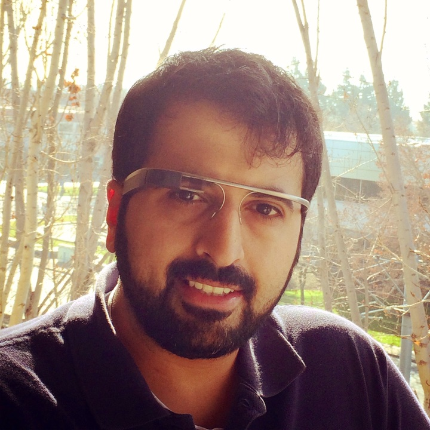

Ryan James
Ryan James is a PhD candidate in Biomedical and Health Informatics at the University of Washington. His research is focused on understanding how mixed reality can be used to improve traditional medical practices. His PhD committee consists of Beth Ripley, MD, PhD (neurosciences), Tom Furness, PhD (the father of virtual reality), Jim Brinkley, MD, PhD (biological structure), and John Gennari, PhD (physiology). Before he found his passion for solving health problems, he received a B.S. in computer science and soon after worked as a full stack developer at Microsoft. He is motivated by the medical issues that took members of his family too soon, and intrigued by the way mixed reality experineces can make data easier to understand and use.

Ahmad Aljadaan
Ahmad Aljadaan is a PhD candidate in Biomedical and Health Informatics at the University of Washington. His research focuses in predictive analytics to improve patient outcomes and reduce readmission rates. Before entering into the health field, Ahmad worked for 4 years as an academic researcher at Stanford University on a collaborative project with NASA Ames. He was the software team lead of the project. He has a B.S. in Management Information Systems, and an M.S. in Human Computer Interaction from the University of Michigan

Mark Laughery
Mark Laughery is a recent graduate from the Human-Centered Design & Engineering Masters program at the University of Washington. Prior to Pear Med, Mark worked as a User Experience Engineer on an NIH-funded global health project in Kenya, as well as for a health and academic research tech startup based in Nairobi. He has a colorful and expanding hat collection from his experience at startups across the US, Asia, and Africa. His background is in analytics and has a Bachelors of Science in Economics.